Wireshark Network Analysis 2nd Ed · Laura Chappell
Know what normal looks like — anomalies reveal themselves.
Identify malware traffic patterns, C2 communication, data exfiltration, and DNS anomalies in Wireshark.
No questions yet.
No notes yet.
💡THINK FIRST · MALWARE TRAFFIC INDICATORS
Malware that uses HTTP or HTTPS for C2 tries to blend in with normal web traffic. What are four behavioral indicators that distinguish malware HTTP traffic from a human browsing the web?
HINT
Think about timing, user-agent, destination diversity, and the presence of a human at the keyboard.
MODEL ANSWER
(1) Beaconing pattern: perfectly regular intervals (every 30, 60, or 300 seconds) with no human variation — humans browse irregularly. (2) User-agent string: static, unusual, or a known malware tool signature; legitimate browsers send changing, version-specific user-agents. (3) Single destination: malware often contacts one or a few C2 IPs/domains repeatedly; human browsing hits many different domains. (4) No DNS before HTTP: if the browser connects by IP directly (no DNS query), or if the DNS query is for a DGA (Domain Generation Algorithm) domain that doesn't match any legitimate service.
Malware Traffic Indicators
Key patterns that indicate malware activity in a network capture:
Beaconing
Malware periodically 'checks in' with a C2 server at regular intervals. In Wireshark, apply a display filter for the suspect host's outbound traffic and use IO Graphs with a 60-second interval — regular spikes at fixed intervals = likely beaconing.
Unusual Protocols or Ports
IRC over port 6667 (classic botnet channel)
HTTP over port 8080 or non-standard ports
HTTPS over non-443 ports
Raw TCP/UDP on unusual ports to external IPs
Suspicious User-Agent Strings
http.user_agent contains "curl" — curl used for automated download or C2
http.user_agent contains "Go-http-client" — Go HTTP client (many C2 frameworks)
Static, outdated, or generic user-agent strings
Large Outbound Data
In Statistics → Conversations, sort by Bytes. Unexpected large outbound bytes to external IPs may indicate data exfiltration.
BASELINE COMPARISONMalware indicators only make sense relative to a baseline. 'curl' user-agent on a developer workstation is normal; on a user's machine at 3 AM is suspicious. Establish a baseline of normal traffic patterns (Chapter 28) before declaring traffic anomalous.
🧠
MENTAL NOTE
Malware indicators: beaconing (regular interval outbound traffic), unusual ports, suspicious User-Agent (curl, python, Go-http-client), large outbound to external IPs, no DNS before connection, DGA domain names. All relative to baseline — same traffic may be normal or malicious depending on context.
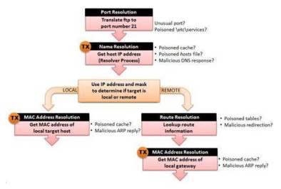
📷Figure 376 — open trace file to view
Figure 376. shows the standard flow diagram for TCP/IP communications, but the notations next to each action box now shows security issues to consider.
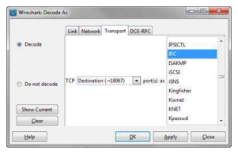
📷Figure 378 — open trace file to view
Figure 378. Use "Decode As" to force the IRC dissector on the traffic
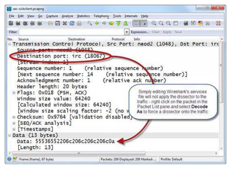
📷Figure 379 — open trace file to view
Figure 379. Adding or editing an entry in the services file does not apply the dissector
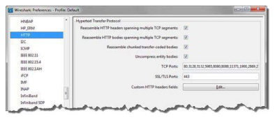
📷Figure 380 — open trace file to view
Figure 380. Some preference settings can add dissector associations
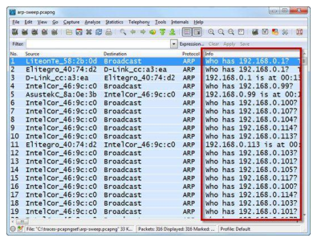
📷Figure 383 — open trace file to view
Figure 383. shows ARP scan traffic referencing a number of dark IP addresses. If this traffic is not normally seen on the network by some monitoring device, it should be flagged for investigation.
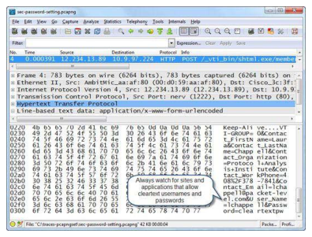
📷Figure 385 — open trace file to view
Figure 385. Wireshark displays a password setting process that is visible in clear text
Ask a Question
Add a Note
💡THINK FIRST · C2 COMMUNICATION PATTERNS
Modern malware uses HTTPS for C2 to blend with normal web traffic. If you can't decrypt the TLS, what observable characteristics still reveal C2 behavior?
HINT
TLS encrypts the payload but not everything. What is visible even in encrypted traffic?
MODEL ANSWER
Even with TLS encryption: (1) Timing patterns: regular beaconing intervals visible in packet timing; (2) Packet size patterns: C2 heartbeats are often small fixed-size packets; (3) Certificate anomalies: self-signed certificates, expired certificates, or certificates for domains that don't match the SNI field; (4) JA3 fingerprinting: the TLS ClientHello contains unencrypted information (cipher suites, extensions, elliptic curves) that fingerprints the TLS library — malware often uses a distinctive JA3 hash; (5) DNS for DGA domains: unusual domain names before the TLS connection.
Botnet and C2 Communication Patterns
Classic Botnet (IRC-based)
Old-school bots connected to IRC channels on port 6667 for commands. Filter: tcp.dstport == 6667. Follow TCP Stream to see the IRC protocol and bot commands.
HTTP-based C2
Bot sends GET/POST to C2 server at regular intervals. Response contains encoded commands. Identify: regular interval outbound HTTP to a single IP, unusual User-Agent, response content doesn't match expected content type.
HTTPS-based C2 (Encrypted)
Look for: TLS certificate anomalies (self-signed, wrong domain), beaconing pattern (regular intervals), JA3 fingerprints in the TLS ClientHello (unencrypted). Display filter: ssl.handshake.type == 1 (ClientHello packets) to see TLS fingerprinting data.
DNS-based C2
Commands encoded in DNS TXT records or subdomain names. Identify: high DNS query rate to domains outside normal business use, long subdomain names, TXT record queries, DNS queries to unusual resolvers.
TLS SNIThe Server Name Indication (SNI) field in the TLS ClientHello is unencrypted — it tells you the hostname the client is connecting to even before the TLS handshake completes. Filter: tls.handshake.extensions_server_name contains "suspicious-domain.com"
🧠
MENTAL NOTE
C2 patterns: IRC (port 6667), HTTP beaconing (regular interval, single destination), HTTPS (look at SNI field and certificate), DNS C2 (long TXT queries, DGA subdomains). Even encrypted C2 leaves traces: timing patterns, certificate anomalies, JA3 fingerprints, DNS patterns.
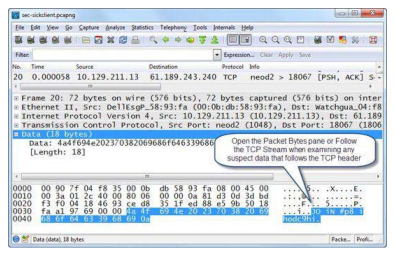
📷Figure 377 — open trace file to view
Figure 377. shows an IRC communication that is not decoded as an IRC conversation because it uses a nonstandard port number (18067).
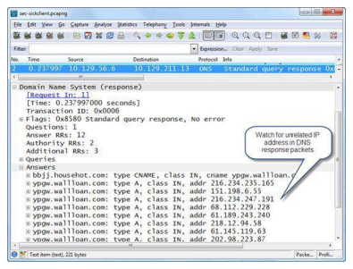
📷Figure 381 — open trace file to view
Figure 381. A high number of answers and a CNAME response may be worth investigating MAC Address Resolution Vulnerabilities When resolving the hardware address of a local targe
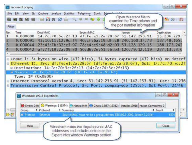
📷Figure 384 — open trace file to view
Figure 384. shows a Macof flood in the Packet List pane. The Time column is set to display the Seconds since Previously Displayed Packets. The majority of the flood is sent at 42 microseconds (mil
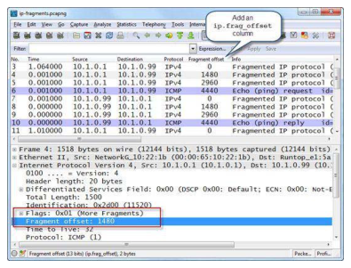
📷Figure 392 — open trace file to view
Figure 392. shows the contents of the IP header in a fragmented communication.
Ask a Question
Add a Note
Data Exfiltration Signatures
Volume-based Detection
Statistics → Conversations → sort by Bytes (B→A, outbound). Any internal host with abnormally large outbound bytes to external IPs warrants investigation. Compare against baseline.
Protocol-based Exfiltration
HTTP POST: large POST body to external IP. Filter: http.request.method == "POST". Follow TCP Stream to see posted data.
DNS exfiltration: data encoded in subdomain names (e.g. aGVsbG8.attacker.com). Filter: long DNS query names dns.qry.name.len > 50.
ICMP tunneling: data encoded in ICMP echo request payloads (normally empty). Filter: icmp.type == 8 and frame.len > 100 (large ICMP pings).
FTP/SMB: unexpected file transfers. Export Objects → FTP-DATA or SMB to see files.
Time-based Indicators
Large outbound transfers at unusual times (3 AM, weekends) without corresponding user activity are suspicious. Check absolute timestamps (View → Time Display Format → Date and Time).
DNS EXFILTRATIONDNS data exfiltration is insidious because most organizations allow all outbound DNS traffic. The exfiltration appears as DNS queries with long, randomly-named subdomains. The attacker runs an authoritative DNS server for their domain and logs all query names — reconstructing the exfiltrated data from the query sequence.
🧠
MENTAL NOTE
Exfiltration detection: Conversations sorted by bytes (outbound), large HTTP POST bodies, long DNS query names (dns.qry.name.len > 50), oversized ICMP payloads (icmp.type==8 and frame.len>100), unusual time-of-day transfers. DNS exfiltration is particularly hard to detect and block.
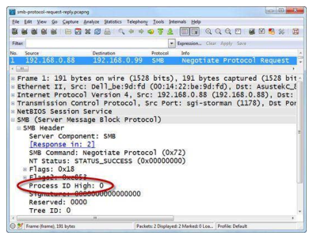
📷Figure 382 — open trace file to view
Figure 382. The SMB header's Process ID High field should be set to 0
Figure 387. The Protocol Hierarchy Statistics window helps detect unusual protocols or applications
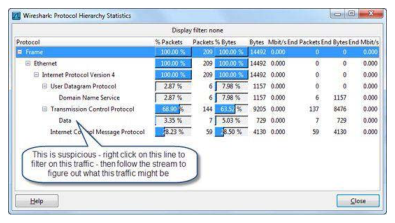
📷Figure 388 — open trace file to view
Figure 388. If Wireshark does not recognize the application, it is listed as "Data" Locate Route Redirection that Uses ICMP One method used for man-in-the-middle attacks is rou
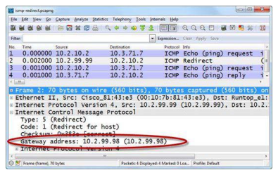
📷Figure 389 — open trace file to view
Figure 389. shows an ICMP Redirect from a gateway at 10.2.99.99 indicating that the best gateway to use is 10.2.99.98. Upon receipt of this packet, a host should update its routing tables to add an ent
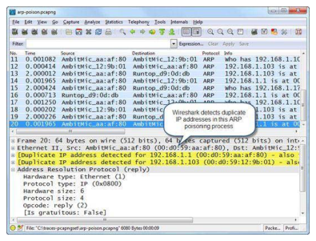
📷Figure 390 — open trace file to view
Figure 390. shows a trace file of an ARP poisoning process. The poisoning host is using MAC address 00:d0:59:aa:af:80. Open this trace file and examine packets 6 and 7. The poisoning host states that b
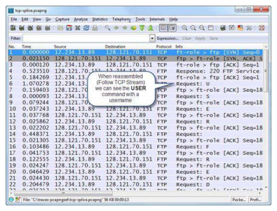
📷Figure 393 — open trace file to view
Figure 393. An FTP login sequence is sent one byte at a time Watch Other Unusual TCP Traffic There are numerous methods used to manipulate TCP communications to bypass IDS or firew
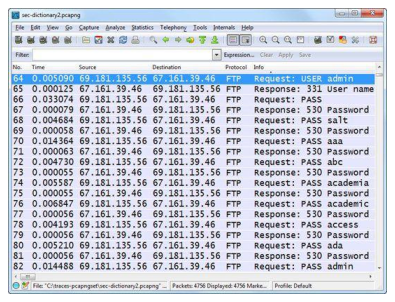
📷Figure 394 — open trace file to view
Figure 394. depicts a dictionary password cracking attempt on the Administrator account of an FTP server. The attacker has tried a blank password, salt, aaa, abc, academia, academic, access, ada and ad
Ask a Question
Add a Note
💡THINK FIRST · DNS ANOMALIES
Domain Generation Algorithms (DGAs) are used by malware to make C2 domains hard to block. What does DGA traffic look like in a DNS capture, and how do you detect it?
HINT
DGA domains are algorithmically generated, often random-looking strings. What does a high NXDOMAIN rate indicate?
MODEL ANSWER
DGA malware generates hundreds of domain names from a seed algorithm — only one (or a few) are actually registered by the attacker at any time. The infected host queries all generated names → most return NXDOMAIN → only the active C2 domain gets a valid response and the connection is made. In Wireshark: a high rate of NXDOMAIN responses (dns.flags.rcode == 3) from a single host, especially for seemingly random domain names (long random strings, unusual TLDs), strongly indicates DGA behavior. Normal hosts don't query hundreds of non-existent domains.
DNS Anomalies and Analysis
Domain Generation Algorithm (DGA) Detection
Filter: dns.flags.rcode == 3 (NXDOMAIN responses) — sort by source IP to find hosts with high NXDOMAIN rates
Look for queries with long, apparently random domain names
High query rate to unusual TLDs (.xyz, .top, .club, .biz) that are commonly abused
Fast-Flux DNS
Attackers use very low TTL values (seconds) and many different IP addresses in DNS responses. Each query returns a different IP — a botnet acts as a proxy layer. Indicators: TTL = 0-60 seconds, same domain returns different IPs on successive queries.
DNS Tunneling
Data encoded in DNS queries and responses — used for C2 or to bypass captive portals. Indicators: very long domain names (> 50 characters), many TXT record queries, high DNS query volume to a single authoritative domain.
Suspicious Resolvers
Malware may configure its own DNS resolver to bypass corporate DNS filtering. Filter: dns and ip.dst != [corporate DNS IPs] — any DNS traffic NOT going to the approved resolver is suspicious.
FIRST FILTERFor DNS anomaly investigation: dns.flags.rcode == 3 — this shows all NXDOMAIN responses. Sort by source IP. Any internal host with > 20-30 NXDOMAIN responses in a short period is worth investigating. Normal hosts rarely query non-existent domains.
🧠
MENTAL NOTE
DNS anomalies: DGA (high NXDOMAIN rate + random domain names), fast-flux (low TTL + different IPs per query), DNS tunneling (long query names + TXT records + high rate to one domain), rogue resolver (DNS traffic to non-corporate IPs). NXDOMAIN rate filter: dns.flags.rcode==3.
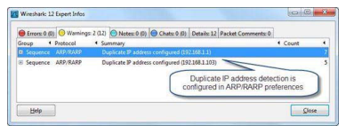
📷Figure 391 — open trace file to view
Figure 391. shows the Expert Info Warnings tab indicating that a duplicate address has been detected for 192.168.1.1 and 192.168.1.103.
Ask a Question
Add a Note
TL;DR — CHAPTER 32
Malware indicators: beaconing (regular intervals), unusual ports, suspicious User-Agent (curl, python), large outbound bytes. C2 patterns: IRC (port 6667), HTTP POST beaconing, HTTPS with certificate anomalies, DNS C2 (TXT records, long subdomains). Exfiltration: large HTTP POST, DNS tunneling (dns.qry.name.len>50), ICMP tunneling (large ICMP payloads), unusual-hours transfers. DGA: high NXDOMAIN rate + random domain names from one host.
Review Questions
Q32.1
What is beaconing and what does it look like in IO Graphs?
HINT
How does malware C2 beaconing differ from human web browsing in terms of timing?
ANSWER
Beaconing is the periodic check-in of malware with its C2 server — sending a small packet or request at regular, fixed intervals (e.g. every 60 seconds) regardless of user activity. Human browsing is highly irregular — activity depends on reading, typing, and user attention. In IO Graphs: apply a display filter for the suspect host's outbound traffic to the C2 IP. With a 60-second interval, beaconing appears as regular, uniform spikes at fixed intervals. Human traffic shows irregular, variable-height spikes corresponding to actual browsing sessions.
Q32.2
What does a high rate of NXDOMAIN (dns.flags.rcode==3) responses from a single internal host suggest?
HINT
When would a normal host generate many NXDOMAIN responses?
ANSWER
A high NXDOMAIN rate (dozens or hundreds in a short period) from a single host strongly suggests DGA (Domain Generation Algorithm) malware. The malware generates many domain names algorithmically — most don't exist (NXDOMAIN) and only one or a few are registered by the attacker at any time. Normal hosts rarely query non-existent domains — maybe 1-5 NXDOMAIN responses in an hour (mistyped URLs, failed automatic service discovery). Apply filter: dns.flags.rcode == 3 and ip.src == [suspect host] to confirm the pattern.
Q32.3
How can you detect DNS data exfiltration in a Wireshark capture?
HINT
DNS exfiltration encodes data in DNS query names. What observable characteristic does this create?
ANSWER
DNS exfiltration creates unusually long domain names — data is base64 or hex encoded in the subdomain portion. Filter: dns.qry.name.len > 50 (legitimate domain names rarely exceed 30 characters including subdomains). Also look for: high DNS query volume to a single authoritative domain (the attacker's domain), TXT record queries (dns.qry.type == 16), and DNS queries containing base64-like character sequences. The attacker's authoritative DNS server logs all query names and reconstructs the exfiltrated data.
Q32.4
What Wireshark filter would you use to find large ICMP echo requests that may contain tunneled data?
HINT
Normal ping (ICMP echo request) packets are small. How large is a typical ping?
ANSWER
icmp.type == 8 and frame.len > 100. ICMP Type 8 is the echo request (ping). A standard ping packet is 74 bytes (Ethernet+IP+ICMP header + 32-56 bytes data). Any ping significantly larger (> 100 bytes) may contain encoded data in the payload — ICMP tunneling carries arbitrary data in the ICMP echo payload. Tools like icmptunnel and ptunnel encode full TCP connections inside ICMP. Look for many large ICMP packets between the same two IPs with the same identifying pattern in the payload.